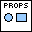

Draw Circle¶
Draw a circle, in data coordinates.
Places a circle on the plot, by specifying the X and Y location of the circle center, along with the radius. Note that since the circle is in data coordinates, it may look “squashed” unless the aspect ratio of the plot is 1.0 (see New Plot ID).


 Plot ID/Plot ID Out
Plot ID/Plot ID Out- Plot identifier. Plot ID Out always contains the same value as Plot ID.
 X Position
X Position- X position of the circle center.
- Y Position
- Y position of the circle center.
- Radius
- Circle radius.
-  Properties
Property cluster, available under the “Properties” subpalette.
 Color
Color- Fill color for the circle. Defaults to light-grey.
 Line
LineControls the appearance of the circle edge.
 Style
Style- Line style (solid, dashed, etc.). Default is to automatically select an appropriate style.
- Color
- Line color. May be a PlotColor or LabView color.
 Width
Width- Line width, in font points (1/72 inch).
- Display
Controls general appearance of the circle.
- Alpha
- Alpha blending value for this object (0.0 to 1.0). Default is 1.0 (fully opaque).
- Z Order
- Stacking order. Default is chosen based on the object type.

 Error In/Out
Error In/Out- Terminals for standard error functionality.
Axis Types¶
This VI supports rectangular axes. Use with polar axes will result in 402905 - Operation Not Supported for Polar Plot. Likewise, only linear scales are supported. Use with log or symlog axes will result in 402906 - Operation Not Supported for Axis Scale.
Errors¶
Other information¶
If X Position or Y Position is non-finite, or if Radius is non-finite, zero, or negative, no circle is displayed and no error is returned.